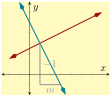

The equations of horizontal and vertical lines are special and distinguished from the equations other lines. Also, pairs of lines that are parallel or perpendicular to each other have interesting features and properties. This section examines all these geometric features of lines.
Subsection2.8.1Horizontal Lines and Vertical Lines
We learned in Section 7 that all lines can be written in standard form. When either \(A\) or \(B\) equal \(0\text{,}\) we end up with a horizontal or vertical line. Let’s take the standard form line equation, \(Ax+By=C\text{,}\) and one at a time let \(A=0\) and \(B=0\) and simplify each equation.
At the end we just renamed the constant numbers \(\frac{C}{B}\) and \(\frac{C}{A}\) to \(k\) and \(h\) because of tradition. What is important, is that you view \(h\) and \(k\) (as well as \(A\text{,}\)\(B\text{,}\) and \(C\)) as constants: numbers that have some specific value and don’t change.
Think about one of these equations: \(y=k\text{.}\) It says that the \(y\)-value is the same no matter where you are on the line. If you wanted to plot points on this line, you are free to move to the left or to the right on the \(x\)-axis, but then you always move up (or down) by the same amount to make the \(y\)-value reach \(k\text{.}\) What does such a line look like?
Let’s plot the line with equation \(y=3\text{.}\) To plot some points, it doesn’t matter what \(x\)-values we use. All that matters is that \(y\) is always \(3\text{.}\)
A line like the one in Figure 7 is horizontal. It is parallel to the horizontal axis. All the \(y\)-values of points on a horizontal line are the same. All lines with an equation in the form \(y=k\) are horizontal lines.
Let’s plot the line with equation \(x=5\text{.}\) Points on the line always have \(x=5\text{,}\) so to make a graph, we must move right to \(5\) on the \(x\)-axis. From there, it does not matter if we move up or down, we would still be at a place where \(x=5\text{.}\)
A line like this is vertical, parallel to the vertical axis. All lines with an equation in the form \(x=h\) (or, in standard form, \(Ax+0y=C\)) are vertical.
A line like the one in Figure 9 is vertical. It is parallel to the vertical axis. All the \(y\)-values of points on a vertical line are the same. All lines with an equation in the form \(x=h\) are vertical lines.
In Checkpoint 2.4.18, we learned that a horizontal line’s slope is \(0\text{,}\) because the \(y\)-values don’t change as time moves on. So the numerator in the slope formula is \(0\text{.}\) Now, if we know a line’s slope and its \(y\)-intercept, we can use slope-intercept form to write its equation:
This gives us an alternative way to think about equations of horizontal lines. They have a certain \(y\)-intercept \(b\text{,}\) and they have slope \(0\text{.}\)
The perimeter is the result from adding the six sides together: \({\frac{7}{8}}T + {\frac{2}{5}}I + {\frac{2}{3}}v + {\frac{4}{5}}I + {\frac{3}{4}}T + v\text{.}\) There are two \(v\)-terms, two \(T\)-terms, and two \(I\)-terms. We combine each pair of like terms and the perimeter is \({\frac{5}{3}v+\frac{13}{8}T+\frac{6}{5}I}\text{.}\)
What is the slope of a vertical line? Figure 13 shows three lines passing through the origin, each steeper than the last. In each graph, you can see a slope triangle that uses a “run” of \(1\) unit.
If we continued making the line steeper and steeper until it was vertical, the slope triangle would still have a “run” of \(1\text{,}\) but the “rise” would become larger and larger with no upper limit. The slope would be \(m=\frac{\text{very large}}{1}\text{.}\) Actually if the line is vertical, the “rise” segment we’ve drawn will never make contact with the line. So there won’t be any “rise” to correspond with that “run”. We usually say that the slope of a vertical line is undefined. You can also say that a vertical line “has no slope”.
Be careful not to mix up “no slope” (which means “its slope is undefined”) with “has slope \(0\)”. If a line has slope \(0\text{,}\) it does have a slope.
In sports, some players wear number \(0\text{.}\) That’s not the same thing as not having a number. This is similar to the situation where having slope \(0\) means you do have a slope, and is different from not having a slope.
Josh and Jonathan are co-owners of a pastry shop. Josh bakes pies and Jonathan bakes cakes. Josh is able to bake \(p\) pies each day he works and Jonathan is able to bake \(c\) cakes each day he works.
Let \(x\) represent the price of a new \(60\)-inch television at Target on Black Friday (which was \(\$650\)), and let \(y\) be the number of hours you will watch something on this TV over its lifetime. What is the relationship between \(x\) and \(y\text{?}\)
Well, there is no getting around the fact that \(x=650\text{.}\) As for \(y\text{,}\) without any extra information about your viewing habits, it could theoretically be as low as \(0\) or it could be anything larger than that. If we graph this scenario, we have to graph the equation \(x=650\) which we now know to give a vertical line, and we get Figure 18.
If the line with equation \(x=h\) is vertical, it has an \(x\)-intercept at \((h,0)\) and its slope is undefined. Some say it has no slope, and some say the slope is infinitely large.
Two trees were planted in the same year, and their growth over time is modeled by the two lines in Figure 21. Use linear equations to model each tree’s growth, and interpret their meanings in this context.
We can see Tree 1’s equation is \(y=\frac{2}{3}x+2\text{,}\) and Tree 2’s equation is \(y=\frac{2}{3}x+5\text{.}\) Both trees have been growing at the same rate, \(\frac{2}{3}\) feet per year, or \(2\) feet every \(3\) years. The two lines have the same slope \(\frac{2}{3}\text{.}\) No matter which line we look at, moving rightward \(3\) units causes us to move upward \(2\) units, and so the two lines will never meet. They are parallel.
(c)A congruent slope triangle can be drawn for the perpendicular line. It’s legs have the same lengths, but in different positions, and one is negative.
For two lines that are neither vertical nor horizontal, they are perpendicular to each other if and only if the slope of one is the negative reciprocal of the slope of the other. That is, if one has slope \(m\text{,}\) the other has slope \(-\frac{1}{m}\text{.}\) (And a vertical line and a horizontal line are always perpendicular to each other.)
Another way to say this is that the product of the slopes of two perpendicular lines is \(-1\) (assuming both of the lines have a slope in the first place). That is, if there are two perpendicular lines and we let \(m_1\) and \(m_2\) represent their slopes, then \(m_1\cdot m_2=-1\text{.}\)
Line \(A\) passes through \((-2,10)\) and \((3,-10)\text{.}\) Line \(B\) passes through \((-4,-4)\) and \((8,-1)\text{.}\) Determine whether these two lines are parallel, perpendicular or neither.
If you know two points on one line, and you know two points on a second line, what could you do to determine whether or not the two lines are perpendicular?
When a young tree was planted in your school’s garden, it was 4 feet tall. It grows 4/7 feet per year. After some number \(n\) of years, the tree is 16 feet tall. This gives us the equation \({4+{\frac{4}{7}}n}={16}\text{.}\) Has it been \(21\) years?
Line \(\ell_1\) contains the points \({\left(-5,9\right)}\) and \({\left(-8,-6\right)}\text{.}\) Line \(\ell_2\) contains the points \({\left(9,0\right)}\) and \({\left(10,5\right)}\text{.}\)
Line \(\ell_1\) contains the points \({\left(-1,6\right)}\) and \({\left(-3,2\right)}\text{.}\) Line \(\ell_2\) contains the points \({\left(9,0\right)}\) and \({\left(13,-2\right)}\text{.}\)
Line \(\ell_1\) contains the points \({\left(4,3\right)}\) and \({\left(3,-8\right)}\text{.}\) Line \(\ell_2\) contains the points \({\left(8,-9\right)}\) and \({\left(-1,4\right)}\text{.}\)
Line \(\ell_1\) contains the points \({\left(8,0\right)}\) and \({\left(9,1\right)}\text{.}\) Line \(\ell_2\) contains the points \({\left(11,3\right)}\) and \({\left(7,-1\right)}\text{.}\)
A line is parallel to the line passing through \({\left(-4,-2\right)}\) and \({\left(-2,5\right)}\text{,}\) and passes through \({\left(7,0\right)}\text{.}\)
A line is perpendicular to the line passing through \({\left(-2,-4\right)}\) and \({\left(2,-1\right)}\text{,}\) and passes through \({\left(-3,2\right)}\text{.}\)
A line is perpendicular to the line passing through \({\left(1,6\right)}\) and \({\left(8,6\right)}\text{,}\) and passes through \({\left(-9,4\right)}\text{.}\)
A line is parallel to the line passing through \({\left(6,6\right)}\) and \({\left(-6,6\right)}\text{,}\) and passes through \({\left(7,8\right)}\text{.}\)